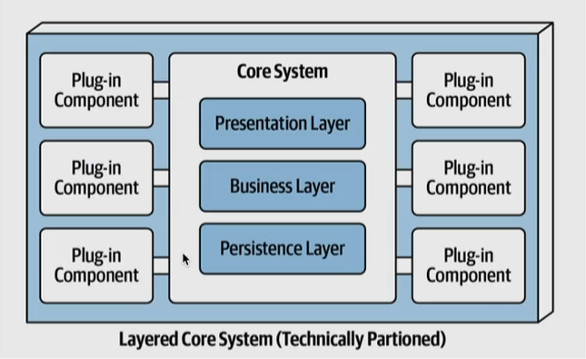

Estilo Baseado em Microkernel
Estilo Baseado em Microkernel
A arquitetura baseada em microkernel é um estilo arquitetural que se concentra em manter o núcleo do sistema simples, com funcionalidades essenciais, enquanto os serviços adicionais são movidos para módulos externos. Essa abordagem facilita a manutenção, extensibilidade e adaptabilidade em sistemas complexos.
Entendendo a Arquitetura Baseada em Microkernel:
O conceito-chave por trás da arquitetura baseada em microkernel é manter o núcleo (kernel) do sistema o mais enxuto e simples possível, tratando apenas das funções essenciais, como gerenciamento de memória, escalonamento de processos e comunicação básica. As funcionalidades mais complexas e específicas do sistema são implementadas como módulos externos que se comunicam com o núcleo por meio de interfaces bem definidas.
Exemplo de uso do Microkernel: Sistemas Operacionais:
Os sistemas operacionais são um exemplo clássico de aplicação da arquitetura baseada em microkernel. Nesse contexto, o microkernel contém funcionalidades essenciais, como o gerenciamento de hardware, comunicação entre processos e escalonamento de tarefas. Funcionalidades mais complexas, como sistemas de arquivos, sistemas de rede e drivers de dispositivos, são implementadas como módulos externos que se comunicam com o microkernel.
Exemplo de uso do Microkernel: Sistemas Embarcados e Telecomunicações:
A arquitetura baseada em microkernel também é comumente aplicada em sistemas embarcados e na indústria de telecomunicações. Nesses cenários, o microkernel fornece as funcionalidades essenciais do sistema, como gerenciamento de recursos, segurança e comunicação de baixo nível. Serviços específicos, como protocolos de comunicação, serviços de transcodificação de áudio/vídeo e serviços de gerenciamento de chamadas, são implementados como módulos externos. Isso permite que os fabricantes personalizem sistemas para atender às necessidades específicas de seus dispositivos ou infraestrutura de telecomunicações.
A imagem1 abaixo exemplifica o uso da arquitetura baseada em Micro Kernel.

Fundamentals of Software Architecture
Vantagens da Arquitetura Baseada em Microkernel:
- Flexibilidade e Extensibilidade: A modularidade facilita a adição, remoção e atualização de serviços sem afetar o núcleo do sistema.
- Confiabilidade e Tolerância a Falhas: Problemas em módulos externos têm menos impacto no funcionamento do núcleo do sistema.
- Manutenção Simplificada: A separação entre o núcleo e os módulos externos facilita a manutenção e o desenvolvimento.
- Segurança Aprimorada: Restringir as funcionalidades no núcleo pode melhorar a segurança, limitando a superfície de ataque.
A arquitetura baseada em microkernel é uma abordagem poderosa para a construção de sistemas complexos e adaptáveis. Ela é particularmente adequada para sistemas que requerem flexibilidade, escalabilidade e extensibilidade. Ao manter o núcleo simples e delegar funcionalidades específicas a módulos externos, as organizações podem criar sistemas que se adaptam facilmente as constantes mudanças.
-
Imagem retirada do livro: Fundamentals of Software Architecture ↩︎